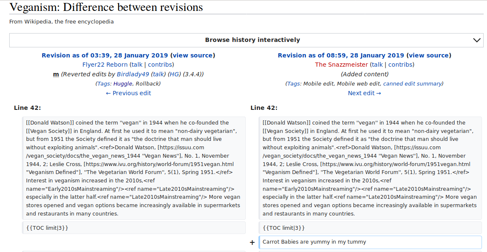
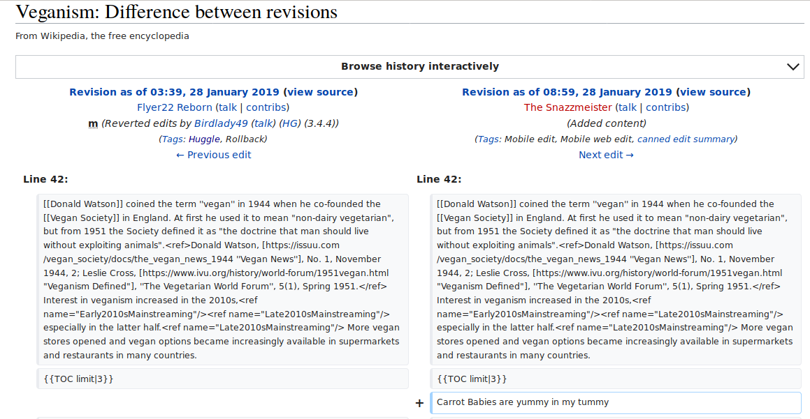

You shall not publish this: Edit filters on EN Wikipedia
HCC Research Group Meeting May 2019
Lusy
Edit filter, an example

Motivation
What are edit filters? Why are there edit filters? What task(s) do they take care of? How are they different from other existing mechanisms?
"The edit filter is a tool that allows editors in the edit filter manager group to set controls mainly to address common patterns of harmful editing."
Structure
(of the presi? or of the thesis?)
Vandalism on Wikipedia
Def:
"On Wikipedia, vandalism has a very specific meaning: editing (or other behavior) deliberately intended to obstruct or defeat the project's purpose, which is to create a free encyclopedia, in a variety of languages, presenting the sum of all human knowledge."
Examples
 

Fighting vandalism on Wikipedia
Literature review:
bots, semi-automated tools, ores, humans
Important to study algorithmic mechamisms
- increased relative share of edits
- difference not only of scale but of substance
- intransparency and gatekeeping
Bots
- 1st line of defence
- fastest revert time
- ClueBot NG, ...
Semi-automated tools
- Huggle, Twinkle, STiki, ..
ORES
- can be used by bots or semi-automated tools
Humans
- watchlists
- manual reverts of chance discoveries
Summary: funnel diagram (without filters) One thing is ostentatiously missing: edit filters
(# Methods)
Data
- wikipedia's pages (policies, guidelines, etc.), most prominently: ...
- abuse filter extention tables
Descriptive Overview. What is an edit filter?

MediaWiki Extension
- permissions
- tables: abuse_filter, abuse_filter_log, abuse_filter_action and abuse_filter_history
- actions filters trigger: logging, warning, throttling, disallowing, revoking auto-promoted groups, blocking, removing from privileged groups, range-blocking, tagging
- smth else?
Introducing a new filter
For everybody:
- checklist: is an edit filter the suitable solution
- request at: https://en.wikipedia.org/wiki/Wikipedia:Edit_filter/Requested
For edit filter managers:
- read the docs
- run tests
- Generally, always set action to logging only first
- Announce at https://en.wikipedia.org/wiki/Wikipedia:Edit_filter_noticeboard and receive feedback
- possibly change the filter action
Who can edit filters
- abusefilter-modify permission
- March 9, 2019: 152 users in the edit filter managers group (and 1181 admins)
- (4 users on CA Wikipedia, and the role doesn't exist on the DE, ES, RU or BG wiki)
How are problems handled
Edit Filter Noticeboard:
- current filters behaviour: e.g. changing filter action or updating pattern
- users rights discussions
https://en.wikipedia.org/wiki/Wikipedia:Edit_filter/False_positives:
- monitored by edit filter managers
- update filters
- help good faith users
- discourage malicious edits
Personal security best practices for edit filter managers
Tripping a filter: Traces

Motivations for introducing the abuse filter extention
Quote from EditFilter discussion archive
Also from the archive: abuse filter -> edit filter
Collaboration bots-filters
"There is a bot reporting users tripping certain filters at WP:AIV and WP:UAA; you can specify the filters here."
- consider collaborations filters/bots (e.g. MrZ Bot which puts editors found on the abuse log often on the AIV noticeboard.) are there further exampled for this kind of collaborations?
Timeline
Oct 2001 : automatically import entries from Easton’s Bible Dictionary by a script
29 Mar 2002 : First version of https://en.wikipedia.org/wiki/Wikipedia:Vandalism (WP Vandalism is published)
Oct 2002 : RamBot
2006 : BAG was first formed
13 Mar 2006 : 1st version of Bots/Requests for approval is published: some basic requirements (also valid today) are recorded
28 Jul 2006 : VoABot II ("In the case were banned users continue to use sockpuppet accounts/IPs to add edits clearly rejected by consensus to the point were long term protection is required, VoABot may be programmed to watch those pages and revert those edits instead. Such edits are considered blacklisted. IP ranges can also be blacklisted. This is reserved only for special cases.")
21 Jan 2007 : Twinkle Page is first published (empty), filled with a basic description by beginings of Feb 2007
24 Jul 2007 : Request for Approval of original ClueBot
16 Jan 2008 : Huggle Page is first published (empty)
18 Jan 2008 : Huggle Page is first filled with content
23 Jun 2008 : 1st version of Edit Filter page is published: User:Werdna announces they're currently developing the extention
2 Oct 2008 : https://en.wikipedia.org/wiki/Wikipedia_talk:Edit_filter was first archived; its last topic was the voting for/against the extention which seemed to have ended end of Sep 2008
Jun 2010 : STiki initial release
20 Oct 2010 : ClueBot NG page is created
11 Jan 2015 : 1st commit to github ORES repository
30 Nov 2015 : ORES paper is publishedfunnel diagram with filters
State of the Art on EN Wikipedia
Data analysis
Next steps for finishing the thesis
- abuse_filter_history table (ping Aaron)
Beyond the thesis
- What are the differences between how filters are governed on EN Wikipedia compared to other language versions?
- Are there filters targetting harassment?
- Ethnographic analysis (e.g. IVs with edit filter managers/admins/users whose edits have been disallowed would be really interesting)
- (how) has the notion of "vandalism" on Wikipedia evolved over time (when looking at the regex patterns)
- Precision/Recall: False Positives? were filters shut down, bc they matched more False positives than they had real value?
- Do filters work the desired way/help for a smoother Wikipedia service or is it a lot of work to maintain them and the usefulness is questionable?
- What can we filter with a REGEX? And what not? Are regexes the suitable technology for the means the community is trying to achieve?
Current Limitations
- Only EN Wikipedia
- manual filter classification only conducted by me
Bigger picture: Upload filters

{kind=link}
Thank you!
These slides are licensed under the CC BY-SA 4.0 License.